Практичний досвід · журнал «ДентАрт» 2020 №3
Обґрунтування вибору ортодонтичного лікування з видаленням зубів
Evidence of Choice: Orthodontic Treatment with Extraction
Ортодонтичне лікування з видаленням або без видалення найчастіше премолярів є предметом активних дискусій уже досить тривалий час.1-3
Ряд дослідників запропонували концепцію функціональної оклюзії, яка базується на принципах гнатології. Основну увагу вони зосередили на центральному положенні виростка в суглобовій ямці. Змикання між зубними рядами буде встановлюватися на основі цього співвідношення. Видалення премолярів при ортодонтичному лікуванні вони вважають неприпустимим, бо це призводить до дисбалансу в роботі жувального апарату і може стати пусковим механізмом у розвитку дисфункції СНЩС.4-6
Однак філософія лікування, спрямована на збереження всіх зубів у зубній дузі, нерідко породжує пародонтальні зміни: рецесію ясен, резорбцію краю альвеолярного відростка, погіршення профілю7 — з огляду на те, що брак місця в зубному ряду намагаються компенсувати протрузійним положенням центральних різців або надмірним розширенням. Часто у такої категорії пацієнтів спостерігаються рецидиви.8
Мета нашої роботи — на клінічному прикладі обґрунтувати тактику ортодонтичного лікування з видаленням зубів, спрямовану на поєднання лицьової естетики та ідеальної оклюзії.
Клінічний приклад
У клініку звернулася 18-річна пацієнтка зі скаргами на некрасиву усмішку, неправильне розташування зубів на верхній і нижній щелепах (фото 1). При зовнішньому огляді обличчя симетричне, пропорційне, доліхоцефалічний тип. Профіль опуклий, губи в спокої зімкнуті з напругою, дихання змішане. Носогубна і підборідні складки середньої вираженості. Інтраоральне обстеження засвідчило: cлизова оболонка переддвер'я ротової порожнини в кольорі не змінена, глибина переддвер'я 5 мм, прикріплення вуздечки верхньої губи на відстані 4 мм від міжзубного сосочка має достатню протяжність і не обмежує рухливість губи (фото 1). Стан слизової оболонки в зоні щік, дна ротової порожнини, піднебіння, язика без видимих патологічних змін. Вуздечка язика має нормальне прикріплення, не обмежує його рухливість. На задній стінці глотки ділянок гіпертрофії і запального процесу не спостерігалося. Середня лінія нижнього зубного ряду зміщена ліворуч близько 2 мм. Співвідношення молярів з обох боків — I клас за Енглем.
Аналіз гіпсових моделей виявив дефіцит простору на верхній зубній дузі — 3 мм, на нижній зубній дузі дефіцит місця — 7 мм (фото 2). На ортопантомограмі (ОПТГ) резорбції і запальних змін не було. Формування зубів 18, 28, 38, 48 на 1/2 величини кореня (фото 3).
Розшифрування телерентгенограми (ТРГ) до лікування в бічній проєкції показало скелетний II клас, кут ANB — 5° (утворений найглибшим краєм на верхній щелепі — точкою А, з'єднанням носолобного шва — точкою Nа і найглибшою виїмкою на нижній щелепі — точкою В), SNA — 81° (кут між краніальною площиною SN і точкою А на верхній щелепі), SNB — 76° (кут, утворений перетином площиною SN і точкою В на нижній щелепі) (фото 4). Нижньощелепний кут FMA був збільшений до 35° (кут, утворений нижньощелепною площиною — FH). Нахил верхніх різців U1 до FH (кут, утворений віссю верхніх центральних різців U1 до FH) дорівнює 119°. IMPA був збільшений до 100° (кут між віссю нижніх центральних різців і нижньощелепною площиною). Occ P до FH (кут між оклюзійною площиною і FH) відповідав 14°. Відношення передньої лицьової висоти до задньої — індекс PFH/AFH — становив 0,6. Z-angle знижений до 65° (таблиця 1).
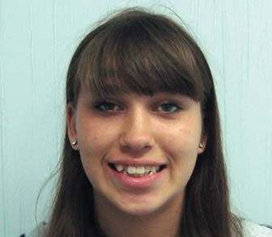
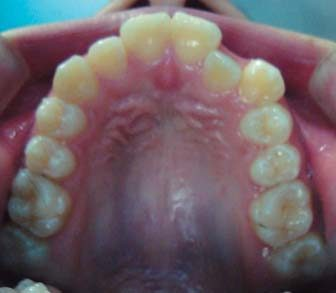
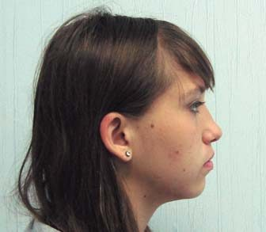
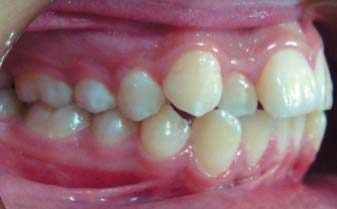
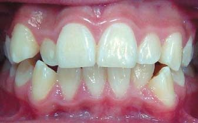
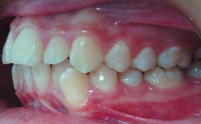
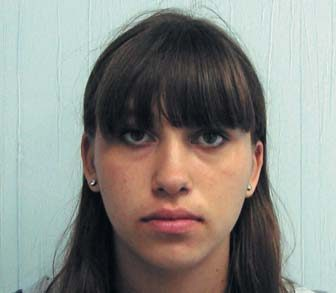
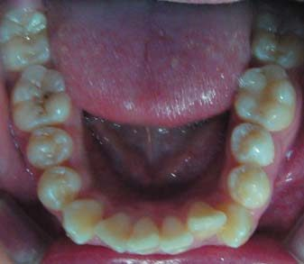
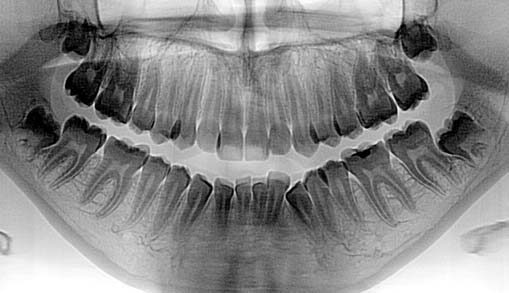
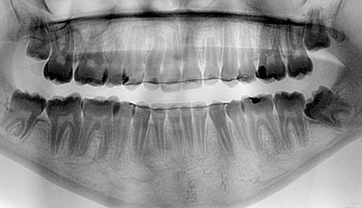
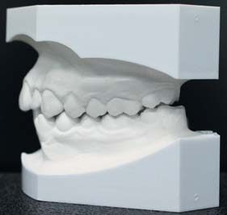
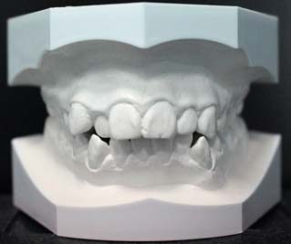
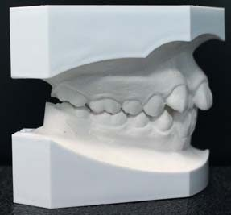
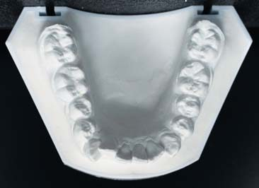
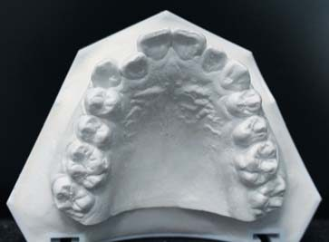
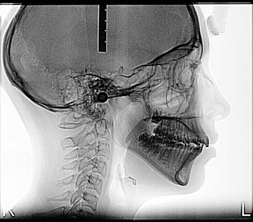
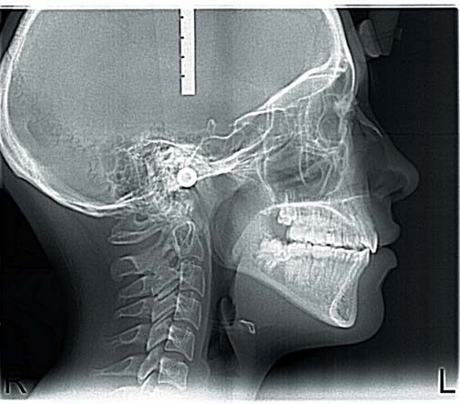
| Цефалометричні кути (°) | Середні значення | До лікування | Після лікування | Після 8 років ретенції |
|---|---|---|---|---|
| SNA | 82 | 81 | 80 | 81 |
| SNB | 80 | 76 | 76 | 76 |
| ANB | 2 | 5 | 4 | 5 |
| FMA | 25 | 35 | 33 | 33 |
| PFH/AFH | 0,8 | 0,6 | 0,7 | 0,7 |
| FH до Occ P | 10 | 14 | 11 | 10 |
| U1 до FH | 114 | 119 | 105 | 105 |
| IMPA | 90 | 100 | 89 | 89 |
| Z-angle | 75 | 65 | 72 | 76 |
На основі даних клінічних обстежень, антропометричного дослідження моделей щелеп, використання додаткових спеціальних методів дослідження — телерентгенографії в бічній проєкції і ортопантомограми — було визначено діагноз: вертикальний тип росту лицьового скелета, скелетний клас II, співвідношення молярів — I клас за Енглем, дефіцит простору на верхній і нижній зубній дузі, зміщення середньої лінії ліворуч.
- санація ротової порожнини;
- вирівнювання зубних дуг;
- зменшення нахилу верхніх і нижніх центральних різців;
- поліпшення лицьового профілю.
Було запропоновано кілька варіантів лікування. Перший передбачав безекстракційний метод, що ґрунтується на збереженні всіх зубів з апроксимальним зішліфовуванням їх емалі. При цьому не спостерігається поліпшення профілю лиця, рекомендується довічна ретенція для збереження результату. Другий, альтернативний лікувальний план — це видалення перших премолярів на верхній і нижній щелепах. Ретенційний період близько 24 місяців для стабілізації положення зубів. Разом з пацієнткою було обрано цей варіант лікування.
Була встановлена незнімна апаратура (пропис «Рот») з пазом 0,22 дюйма і фіксованою первинною нікель-титановою круглою дугою розміром 0,14 дюйма, потім 0,16 і прямокутною — 0,16-0,25 дюйма. Після вирівнювання зубних дуг встановлено сталеву прямокутну дугу 0,19-0,25 дюйма. Видалено перші премоляри на верхній зубній дузі і нижній. Екстракційні проміжки закривали за допомогою механіки ковзання. Під час кожного візиту послідовно робили ретракцію іклів на обох щелепах, використовуючи еластичний ланцюжок, фіксуючи його від перших молярів до гачків на брекеті ікла з силою 150 Г на обидва боки (фото 5). Після ретракції іклів бічні ділянки були пов'язані восьмиподібними лігатурами. На верхній і нижній сталевій дузі 0,19-0,25 дюйма були напаяні два гачки, зафіксована закриваюча нікель-титанова пружина силою 200 Г від молярів до гачків на дузі на кожному боці, до повного закриття вільних просторів.
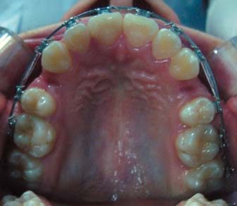
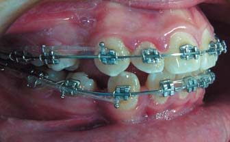
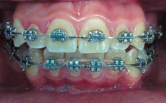
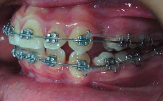
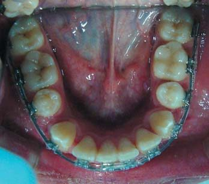
Результати лікування
Незнімну апаратуру зняли через 24 місяці від початку лікування. Помітне поліпшення лицьового профілю на фотографіях обличчя, на інтраоральних знімках зубні дуги вирівняні (фото 6). Аналіз гіпсових моделей засвідчив правильні співвідношення різців у сагітальній та вертикальній площинах. Співвідношення по іклах і молярах залишалося I класу за Енглем, видно співпадіння середньої лінії на верхньому і нижньому зубних рядах (фото 7). При діагностиці в артикуляторі у стані спокою були підтверджені щільний міжгорбиковий контакт між зубними рядами, відсутність передчасних контактів при бічних рухах нижньої щелепи, фронтальна спрямовуюча та іклове ведення з обох боків. Рекомендоване видалення зубів 18, 28, 38, 48.
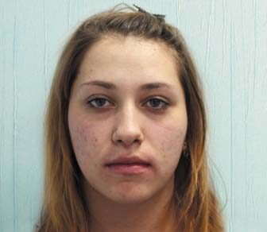
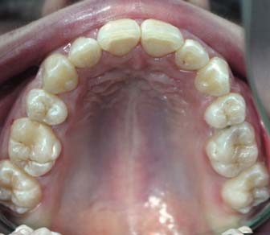
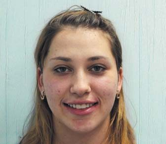
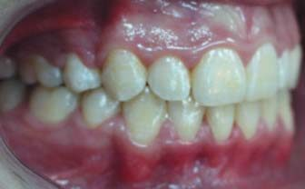
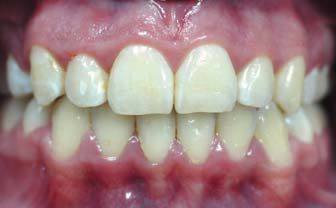
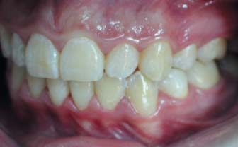
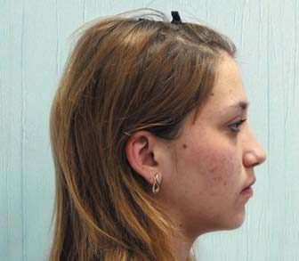
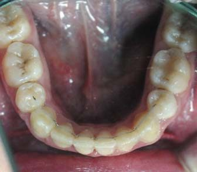
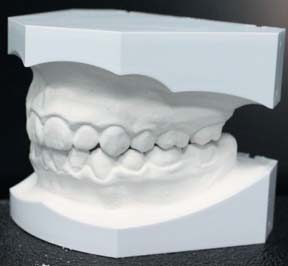
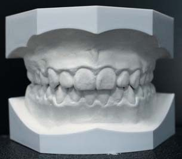
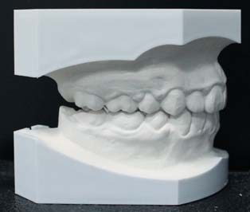
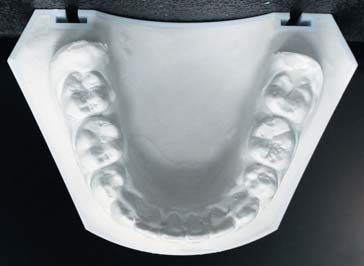
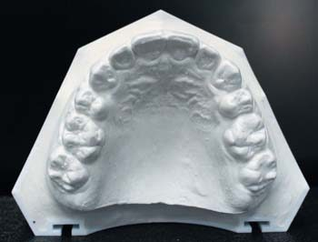
ТРГ у бічній проєкції після лікування встановила поліпшення лицьових ознак: кут FMA зменшився до 33°, перед лікуванням він був 35°, ANB — до 4°. Z-angle збільшений до 72°. FH до Occ P зменшився до 11°. Кут U1 до FH становив 105°, IMPA відповідав 89°. Індекс PFH/AFH дорівнює 0,72.
Через рік ретенції при клінічному огляді був відсутній рецидив, спостерігалася стабільність раніше отриманих результатів. Співвідношення по іклах і молярах — I клас за Енглем (фото 8). Немає скупченості зубів у фронтальній ділянці на верхньому і нижньому зубних рядах. Зубні дуги були правильної форми, в нормі сагітальний зазор і вертикальна оклюзія. Не було симптомів з боку скронево-нижньощелепного суглоба.
Після 8-ми років ретенційного періоду на телерентгенограмі в латеральній проєкції достовірних скелетних і дентальних змін не було (фото 9). На ортопантомограмі змін структури елементів скронево-нижньощелепного суглоба не виявлено. Форма суглобових головок не змінена, сплощення, укорочення шийки не спостерігається.
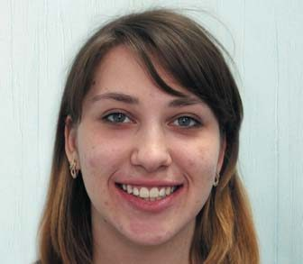
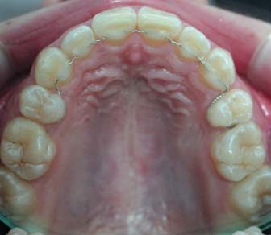
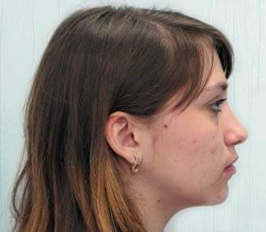
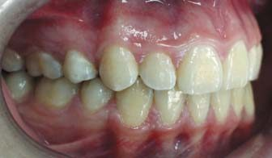
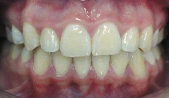
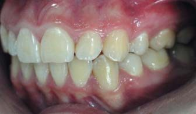
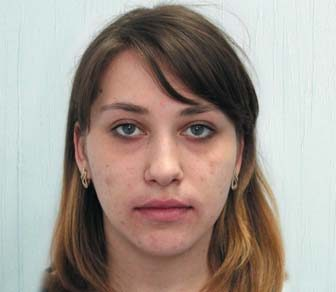
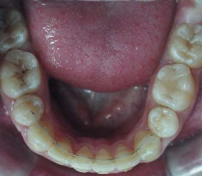
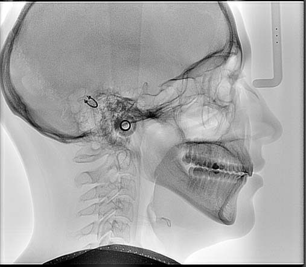
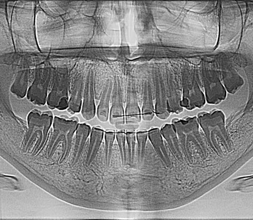
Аналіз і обговорення
Головною метою ортодонтичного лікування є гармонійне поєднання лицьової естетики та ідеальної оклюзії. Планування лікування має будуватися з урахуванням м'яких тканин обличчя, оцінки скелетного типу та оклюзійного аналізу. У пацієнтів із симптомами дисфункції скронево-нижньощелепного суглоба потрібна комплексна діагностика жувального апарату.
Для оцінки стану м'яких тканин обличчя найбільш об'єктивним інструментом може бути аналіз, запропонований Мерріфілд: Z-angle.2 Значення цього показника менше 70°, ймовірно, є причиною вертикальних і горизонтальних невідповідностей або їх комбінацій, а також може бути результатом дентальної протрузії, і тому спостерігається випинання губ. Корекція протрузії та нахил нижніх різців мають гарний естетичний ефект. Визначення Z-angle прояснює й екстракційні рішення. У більшості пацієнтів, яким потрібен екстракційний протокол лікування, він у межах від 50 до 60°.
Лицьова естетика досліджена, коли визначена стратегія лікування для середньої і нижньої частин обличчя. Середня частина обличчя має залежність від верхньої щелепи і позиції верхніх різців, верхньої губи і носа, а нижня — від нижньої щелепи, нижньої губи і підборіддя. Для лицьового балансу верхні різці відіграють основну роль. Позиція нижніх різців пов'язана із сагітальними та вертикальними диспропорціями, а також зі станом м'якої тканини, функції жування і ковтання.
Згідно з Твідом, ідеальне положення нижніх різців до мандибулярної площини перебуває в межах 88-90°. Використовуючи його діагностичний лицьовий трикутник на латеральній ТРГ за допомогою формули, заснованої на співвідношеннях кутів FMA і FMIA (кут, утворений віссю нижніх центральних різців L1 до FH), визначають потрібний нахил нижніх різців — кут IMPA. Однак це має відносне, а не абсолютне значення, і демонструє лише потребу в їх лінгвальному нахилі. Аналіз простору в зубній дузі, запропонований Твідом, точно визначає його дефіцит у передньому, середньому і бічному сегментах на нижній зубній дузі.
Багато в чому варіант лікування з видаленням або без нього буде визначатися також типом росту лицьового скелета. У пацієнтів з вертикальним типом росту (кут FMA > 30°) ймовірність видалення висока. Виправлення навіть легкої скупченості у цієї категорії пацієнтів сприяє ротації нижньощелепної та оклюзійної площин, протрузії зубів і збільшенню висоти нижньої третини обличчя. Тому метою лікування пацієнтів з високим кутом має бути зниження вертикального розміру і протрузії зубів.
Клінічно доведено, що пацієнти з кутом FMA менше 22° рідко потребують екстракції зубів для ефективності лікування.9 Найбільш придатним методом є дисталізація. Видалення премолярів у такої категорії пацієнтів небажане, бо це може призводити до зменшення вертикальних розмірів лиця, погіршення профілю: поглиблення підборідної та носогубної складки, і як результат, пацієнт може мати вигляд значно старшого за свій реальний вік.
Вивчення горизонтальних скелетних невідповідностей і характеру змикання між зубними рядами дозволяє обрати шляхи їх корекції в ході ортодонтичного лікування. Лікувальний план різний для пацієнтів з верхньощелепною протрузією (SNA > 82°, і як наслідок ANB > 2°) і для корекції можливого видалення перших премолярів на верхній щелепі. А у пацієнтів з нижньощелепною ретрузією (SNВ < 80°) потрібне переднє висування нижньої щелепи.
У пацієнтів з бімаксилярною протрузією, скелетним класом I, високими кутами U1 дo FH, IMPA, низьким Z-angle, змиканням молярів I класу за Енглем найсприятливіший варіант — видалення верхніх і нижніх перших премолярів. Це дозволить поліпшити форму обличчя, встановити потрібний нахил різців, зберігши співвідношення за I класом по молярах та іклах. Дослідження останніх років із застосуванням метааналізу засвідчили, що правильне змикання в статичній і динамічній оклюзії не залежить від кількості зубів, які контактують між собою.10 Зменшення кількості зубів, не цілком дотичних в оклюзії, набагато цінніше, ніж інтактні зубні ряди з оклюзійними порушеннями. Було виявлено, що розмір апікальних базисів не впливає на м'язову функцію.10-12 Але якщо бімаксилярна протрузія — результат неправильного застосування механічних методів і зуби містяться наперед у базальній кістці, а вона має нормальний розмір та форму, видалення премолярів протипоказане.
Для пацієнтів зі співвідношенням II класу за Енглем гарний вибір — видалення перших премолярів на верхній щелепі і других на нижній. Це дозволить мезіалізувати моляри, встановивши їх у правильне положення за I класом, використовуючи механіку спрямованої сили, знизити FMA і збільшити SNB шляхом передньої ротації нижньої щелепи із закриттям горизонтальної площини. Однак якщо є значний дефіцит місця в зубному ряду, цей варіант лікування може не мати гарного клінічного ефекту, оскільки потрібен більший лінгвальний нахил нижніх різців, що не спостерігається при цій екстракційній моделі.
Таким чином, у пацієнтів з вертикальним типом росту лицьового скелета не існує єдиного чинника, що визначає варіант лікування. Для цих цілей важливо вивчити обличчя, вертикальний і горизонтальний скелетний тип, співвідношення між зубними рядами. Ортодонтичне лікування спрямоване на зниження висоти нижньої третини обличчя, зменшення протрузії різців та поліпшення лицьового профілю.
Висновки
- Діагностика і планування лікування повинні ґрунтуватися передусім на оцінці м'яких тканин обличчя, скелетному типі та оклюзійному аналізі.
- Найбільш інформативними для цих цілей можуть служити діагностична система, запропонована Tweed Fundation, для оцінки м'яких тканин — Z-angle, показники вертикальної площини: FMA, FH до Occ P, горизонтальних невідповідностей — кути ANB, SNB, дентальних — IMPA.
- У пацієнтів з високими вертикальними розмірами (кут FMA > 30°) використання екструзивної механіки може ускладнити лікування.
- Механіка лікування повинна обмежувати екструзію зубів, сприяти зменшенню нахилу оклюзійної і нижньощелепної площин.
- Для пацієнтів з вертикальним ростом обличчя і скупченістю зубів стабільний варіант дає лікування з видаленням премолярів.
Література
- Cetlin N. M., Ten Hoeve A. Non extraction treatment // J. Clin. Orthod. — 1993. — Vol. 17. — P. 396-413.
- Merrifield L. L. The profile line as aid critically evaluating facial esthetics // Am. J. Orthod. — 1966. — Vol. 11. — P. 804-822.
- Luppanapornlarp S., Johanston I. The effects of premolar extraction a long-term comparison of outcomes in clear cut extraction and non-extraction class II patients // Angle. Orthodontist. Winter. — 1993. — Vol. 63. — P. 257-272.
- Sato S., Tamaki K., Sakakibara K., Ishii Y., Slavicek R. Diagnosis and treatment of the mandibular position of a case associated with temporomandibular joint dysfunction that employed the computerized (l axiographic system // Japan Gnathol. — l994. — Vol. 15. — P. 205-215.
- Slavicek R. Clinical and instrumentals functional analysis for diagnosis and treatment planning // J. Clin. Orthod. — 1998. — Vol. 22. — P. 498-508.
- Slavicek R. Clinical and instrumentals functional analysis for diagnosis and treatment planning. Part 5. Axiography // J Clin Orthod. — 1988. — Vol. 22. — P. 656-667.
- Dong-Soon Choi, Bong-Kuen Cha, Insan Jang, Kyung-Hwa Kang, Sang-Cheol Kim. Three-dimensional finite element analysis of occlusal stress distribution in the human skull with premolar extraction // The Angle Orthodontist. — 2013. — Vol. 2. — P. 204-211.
- Muge Aksu, Iken Kocadereli. Arch Width Change in Extraction and Nonextraction Treatment in Class I Patiens // The Angle Orthodontist. — 2005. — Vol. 6. — P. 948-952.
- Keating P. J. Bimaxillary protrusion in the Caucasion: cephalometric study of the morphological features. Br J. — 1985. — Vol. 12. — P. 193-201.
- Burke S., Silvera A., Goldsmith L., Yancey J., Van Stewart A., Scarfe W. Meta-analysis of mandibular intercanine width in trtatment and postretention // Angle Orthodontist. — 1998. — Vol. 68. — P. 53-60.
- Blake M., Bibby K. Retention and stability: a review of the literature // Am. J. Orthod. Dentofacial. Orthop. — 1998. — Vol. 14. — P. 299-306.
- Littlewood S. J. Evidence based retention: where are we now? // Semin Orthod. — 2017. — Vol. 23. — P. 229-236.